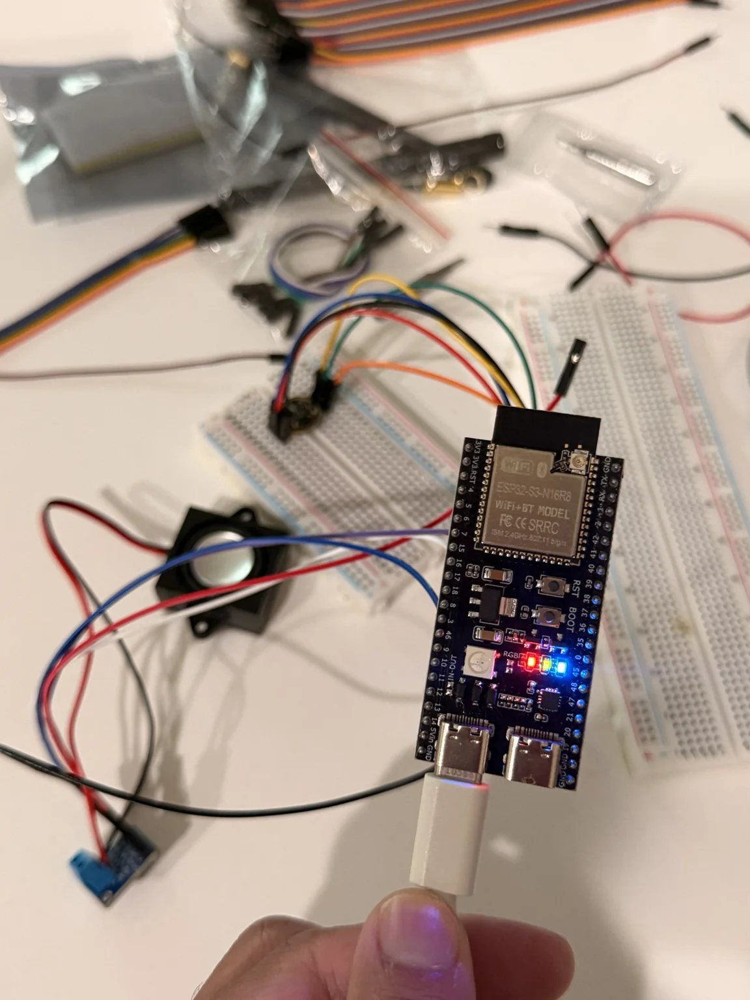
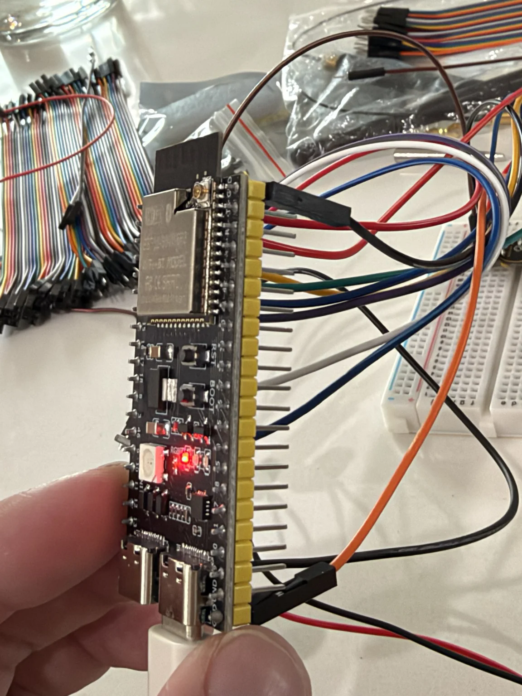
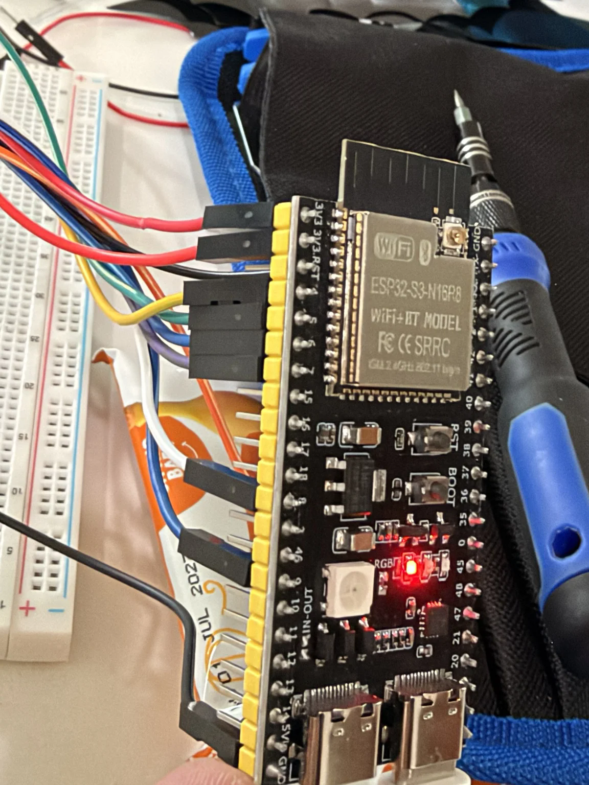
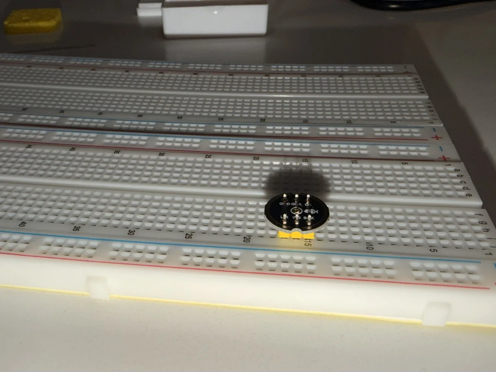

05 / EMBEDDED SYSTEMS & AI
Jarvis: ESP32 voice assistant.
Building a voice assistant from the hardware up. An ESP32-S3, a microphone, and a speaker are the starting point for a hands-free connection to my home automation and AI services.
Why I’m building it
I wanted to build my own Jarvis: something I can talk to, ask follow-up questions, and eventually use to control my home. This project connects my interest in AI with hands-on electronics, firmware, and the infrastructure I already run at home.
The hardware
The prototype uses an ESP32-S3 N16R8 development board, an I2S microphone, a MAX98357A mono I2S amplifier, and a 4-ohm speaker. I assembled the circuit with breadboards and jumper wires and soldered the module headers myself.
The ESP32 is intended to handle audio input, playback, and the network connection. Backend services handle the conversational processing and speech generation.
What I’ve worked through
Wiring and assembly
Connected power, ground, and I2S signal lines. Worked through header orientation, soldering, GPIO assignments, and the microphone and amplifier connections.
Firmware and audio debugging
Used Arduino IDE and serial output to troubleshoot audio initialization and a playback issue that initially reported zero bytes written. Updating the audio write loop produced an audible test tone and confirmed speaker output.
Connecting hardware with services
Experimented with a Jarvis bridge and Kokoro text-to-speech as part of the voice backend. The next stage is bringing that work together into a reliable voice interaction loop.
Current status & next steps
This is an in-progress prototype. Hardware assembly and speaker test output are documented; reliable wake-word detection, conversational follow-ups, and end-to-end Home Assistant control are still development goals.
Next I’m focusing on microphone capture, stable speech playback, and integrating the voice backend with my HomePi setup.
What this project demonstrates
Learning by building: soldering and circuit assembly, embedded firmware, serial diagnostics, digital audio troubleshooting, and planning the connection between a small device and self-hosted services.
FROM MY WORKBENCH
The build, in progress.
Original photos from assembly and testing. Select a photo for the full image.







